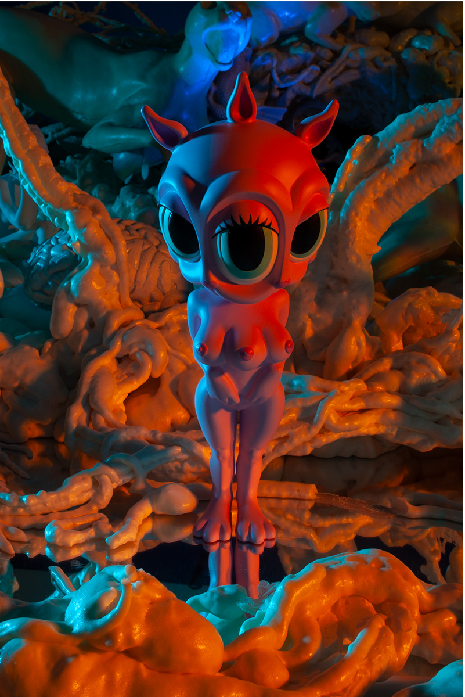

Literature
Archival document, for “MINDstyle’s China Earthquake Charity Event”, MINDstyle Quarterly, August 8, 2008.

Notes
A reference set assembled and photographed by Ron English is retained as supporting documentation for the painting.
Ancillary Documentation


__p001.jpg?v=20260724071411)
